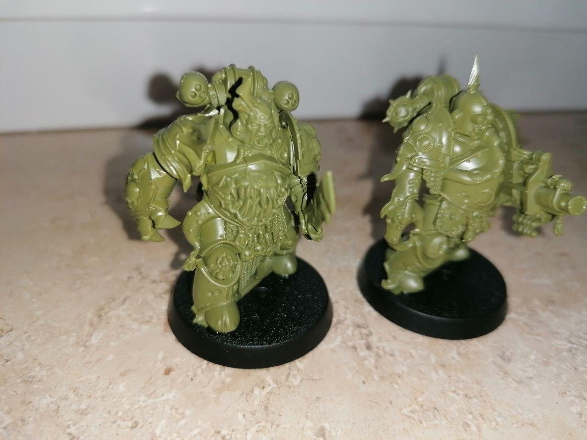

Um Miniaturen angenehm bemalen zu können ist es wichtig, diese nach dem Zusammenbau zu Grundieren. Kommt die Farbe auf das glatte Plastik, finden die Farbkristalle kaum halt und erzeugen so das typische verschmieren der
Farbe.
Ultramarines grundieren - 2€ / 10 Stk. Die Ultramarines wurden als die 13. Legion gegründet 20 K.9 und sind einer der ältesten und mächtigsten Space Marine Orden. Gleichzeitig sind sie der Archetyp des Space Marine Ordens, weil
sie das Vorbild für alle Codex-Orden sind und das Imperium entscheidend mitgeprägt haben.
"No, NO! You would have me leave the side of my sworn battle-brothers in their darkest hour? I refuse! - It is The Sigillite's command. His word is the Emperor's word." - Tylos Rubio, Ultramarines0, 21st Company
Death Guard grundieren - 2€ / 10 Stk. Die Death Guard ist die vierzehnte Space Marine-Legion der Ersten Gründung. Sie betet Nurgle an und besteht ausschließlich aus Seuchenmarines.
"Forget no insult, my sons, as I have never forgotten those of my father, of the Emperor, nor those of Horus. Forgive no slight or grievance. Hold your bitterness deep within, and there let it fester. Let it roil and squirm and churn, until
you are filled with bile so poisonous that all you touch falls to ruin. Thus shall you serve Nurgle best. Thus shall you spread his virulent gifts across the false Imperium, and watch its final rotting..." — Mortarion, Daemon Primarch
of Nurgle

Tyraniden grundieren - 2€ / 10 Stk. Die Tyraniden sind sich ständig verändernde, raubtierhafte Xenos, die mit einem kollektiven, psionischen Bewußtsein handeln. Ihr Beiname ist Der Große Verschlinger.
They are coming! I feel them scratching inside my mind, scratching, screaming, running, so many - so, so many voices. They are coming for us - flesh, body and soul! - Unknown